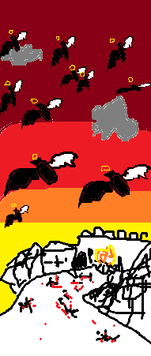
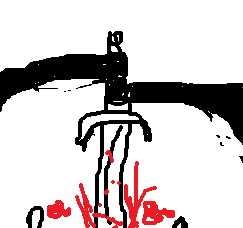

Vous attendez que tous les démons soient devant le roi, pour pouvoir rentrer.
Une fois rentré vous réfléchissez à comment vous allez pouvoir tous les tuer.
Vous avancez vers la voie principale mais restez caché.
Vous voyez tous ces démons attendre le discours du roi.
Vous apercevez qu'à part cette rue et la voie principale, il n'y a aucune autre issue.
donc si vous bloquez la voie principale et que vous attendez dans cette ruelle vous allez pouvoir tous les tuer.
Vous revenez sur vos pas et cherchez quelque chose pour bloquer la voie principale.
Vous ne voyez pas grand chose qui puisse bloquer la voie.
Vous continuez à chercher puis vous trouvez un magasin d'huile.
Vous savez que seule l'huile ne suffira pas mais quand vous regardez la voie et vous voyez que les 2 bâtiments au bord sont en bois et assez haut pour qu'elle bloque la voie s'il s'écroule.
Vous passez à l'action, vous brisez la vitre du marchand d'huile pour récupérer deux tonneaux d'huile.
Vous percez le premier tonneau puis le faites rouler sur toute la voie principale.
Vous versez l'autre huile sur le bâtiment en bois et vous leur mettez le feu.
Vous retournez rapidement dans la ruelle et vous attendez.
Vous sentez l'huile qui commence à brûler. Puis une grande panique générale se propage dans la foule.
Vous voyez des démons qui essaient de fuir vers la voie principale mais vous entendez que le bâtiment s'écroule avant qu'ils n'arrivent à temps, certains se sont fait écraser vu les cris de certains.
Des démons tentent de prendre la rue où vous êtes positionné, vous les attendez de pied ferme mais à force de tuer la rue commence à se bloquer par des cadavres et vous voyez les démons courir vers le château.
Vous n'avez pas d'autre choix que de les suivre.
Les démons armés n'arrivent pas à bouger à cause de toute la foule qui les pousse pour vous fuir.
Vous en profitez pour tuer les plus lents et les plus proches de vous.
Certains gardes arrivent à vous rejoindre mais leurs mains sont trop tremblantes et vous arrivez à les désarmer sans effort.
Vous les tuez par la suite, la tâche est longue au vu du nombre mais vous arrivez à achever tous les démons armés.
Le reste se sont réfugiés dans le château, vous vous apprêtez à aller vers l'entrée du château mais vous voyez le roi vous attendre au pied de celle-ci.
Vous vous préparez à l'affronter.
Le roi vous fonce dessus.
Vous restez concentré, c'est la dernière ligne droite pour ne plus subir votre malédiction.
Vous esquivez tous ces coups.
Mais de fil en aiguille, ces coups deviennent de plus en plus rapides.
Vous avez du mal à les esquiver, vous essayez donc de parer les coups en espérant qu'une ouverture se présente.
Mais ces coups sont si lourds et rapides que votre main se projette en arrière à chaque parade.
Vous sentez que votre bras ne tiendra pas longtemps comme ça.
Vous devez trouver une autre solution.
Mais c'est trop tard, la parade vous fait projeter en arrière et ils en profitent pour foncer sur vous pour vous percer votre tête avec son épée.
La lame se rapproche de plus en plus de votre œil, vous voyez votre vie défiler devant vos yeux.
C'est à ce moment-là que vous revoyez vos combats contre Silvie.
Vous vous souvenez de comment elle vous battait et vous reproduisez les mêmes gestes.
Vous vous laissez tomber
Vous mettez vos mains au sol pour les utiliser pour vous projeter
Vous donnez un gros coup de pied à la main du roi qui le désarme
Vous profitez de cette projection, pour vous redresser et lui donnez un coup fatal
Toute cette action vous a paru très longue, c'est comme si le temps ralentissait.
Vous le tuez en lui transperçant la cage thoracique.
Vous sentez que votre mission n'est pas accomplie donc vous brûlez le château et emprisonnez tous les démons à l'intérieur
Vous entendez leurs cris, leurs pleurs, leurs supplications
Vous espérez entendre la voix des anges qui vous félicite mais rien.
"Félicitations! Héros! Vous nous avez bien amusés"
Votre fierté disparaît, comment ça amusés?
Elle continue à vous parler.
"Nous voulions nous amuser avant de lancer l'apocalypse et aussi se débarrasser du prêtre qui nous enquiquinerait dans notre amusement.
Au moins, nous avons pu voir toutes tes actions et c'était surprenant comment un pouilleux comme toi a pu être aussi fort en réalité. Pour te féliciter nous te tuerons en dernier pour que tu contemples la beauté que nous allons créer"
Vous vous retournez en espérant une blague.

Vous voyez une vision d'horreur, des espèces d'anges avec une aile noire et blanche qui vole par centaine dans le ciel.
Le ciel s'est changé en rouge sang avec quelques décalages.
Vous vous effondrez, tout ce que vous avez fait c'était pour faciliter la tâche des véritables monstres.
Vous vouliez sauver le monde mais vous venez de le détruire.
Vous avez tué toutes ces vies, et surtout Emilie.
Vous revoyez son sourir et les larmes commencent a couler sur vos joues.
Vous vous rappelez des images que vous avez vues dans le livre dans l'église.
Tout est exactement comme dans ce livre.
Vous vous relevez, vous voulez vous rattraper et au moins les affronter.
Puis vous vous souvenez des paroles de cet ange.
"c'était surprenant comment un pouilleux comme toi a pu être aussi fort en réalité."
Elle n'est pas au courant de ton retour à la mort.
Vous vous dites que vous avez encore une chance de tout réparer.
Vous prenez votre épée et vous vous plantez.

Vous mourez mais vous mourez avec le sourir, pour un meilleur monde.